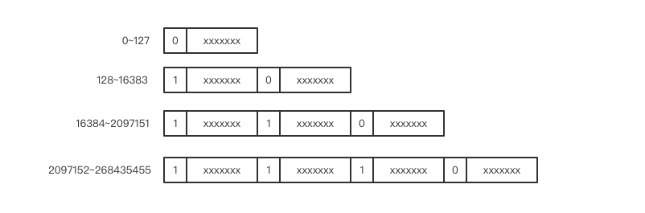
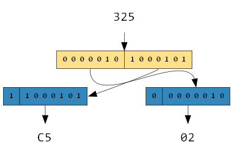
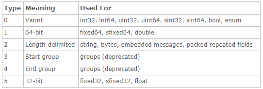
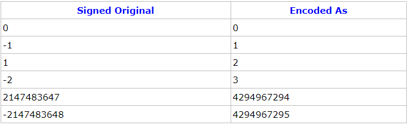

graphviz是贝尔实验室开发的一个开源的工具包，它使用一个特定的DSL(领域特定语言): dot作为脚本语言，然后使用布局引擎来解析此脚本，并完成自动布局。graphviz提供丰富的导出格式，如常用的图片格式，SVG，PDF格式等。
protobuf数据编码
protobuf能够跨平台提供轻量的序列化和反序列化，得益于其平台无关的编码格式，下面分析protobuf的编码格式。
varint 编码
消息传递中大部分使用的整数值都是很小的非负整数，如果全部使用4个字节来表示一个整数会很浪费。所以就发明了一个类型叫变长整数varint。数值非常小时，只需要使用一个字节来存储(如：0~127)，数值稍微大一点可以使用2个字节，再大一点就是3个字节，它还可以超过4个字节用来表达长整形数字。
其原理也很简单，就是保留每个字节的最高位的 bit 来标识是否后面还有字节，1 表示还有字节需要继续读，0 表示到读到当前字节就结束。

如数字1，它本身只占用一个字节即可表示,它的最高位并没有被设置：
0000 0001
如数字325，它的二进制表示如下：
1 0100 0101
用varint编码如下图：

由于protobuf是按照Little Endian的方式进行数据布局的，因此这里需要将两个字节的位置进行翻转。
message 数据格式
protobuf传输的是一系列的键值对，在编码后每一个字段的key都是varint类型，key的值是由tag（字段标号）和type（字段类型）组成。
key的最后3个bits用于存储字段的类型信息。那么在使用该编码时，protobuf所支持的字段类型将不会超过8种。如果tag[1,15]之内则使用一个字节，这就是为什么要把频繁出现的消息元素的tag保留在[1,15]之内的原因。
如下表是protobuf所表示的类型：

定义如下的message:
1 | syntax = "proto3"; |
编译proto文件后，设置字段a的值为325，把序列化后的结果保存到文件中：
1 |
|
以十六进制的方式，查看序列化后的data.bin文件，生成的结果为:
08 c5 02
其中第1个字节0x08的后3位表示type，结果为0，对应于int32的类型。将0x08后移3位，结果为1，对应于字段a。
ZigZag 编码
类型0表示varint，其中包含int32/int64/uint32/uint64/sint32/sint64/bool/enum。对于负数，如：-1。如果使用int32/int64表示一个负数，采用varint编码，因为int32/int64要相互兼容，则会使用10个字节来表示。
如使用上面的代码，设置a的值为-1，序列化到文件：
1 | t.set_a(-1); |
以十六进制的方式，查看序列化后的data.bin文件，生成的结果为:
08 ff ff ff ff ff ff ff ff ff 01
所以对于负数，如果使用的是sint32/sint64，则protobuf会使用ZigZag编码，zigzag 编码将整数范围一一映射到自然数范围，然后再进行varint编，其编码后的结果将会更加高效。
如下是ZigZag对照表：

zigzag将负数编码成正奇数，正数编码成偶数。解码的时候遇到偶数直接除2就是原值，遇到奇数就加1除2再取负就是原值。
如将上面的字段a定义为sint32类型:
1 | syntax = "proto3"; |
设置a的值为-1，序列化到文件：
1 | t.set_a(-1); |
以十六进制的方式，查看序列化后的data.bin文件，生成的结果为:
08 01
可见，对于-1使用sint32类型后只占用1个字节。
Length-delimited
对于string, bytes, embedded messages, packed repeated fields，protobuf使用的是长度前缀编码。第一个字节是字符串的长度，后面相应长度的字节串就是字符串的内容，长度采用的是varint编码。
string
如下代码，定义以了一个string类型的name字段：
1 | syntax = "proto3"; |
设置字段name的值，把序列化后的结果保存到文件中：
1 | t.set_name("lisa"); |
以十六进制的方式，查看序列化后的结果：
0a 04 6c 69 73 61
序列化后各个字节表示的结果如下：

repeated
如下代码，定义以了一个repeated修饰的email字段：
1 | syntax = "proto3"; |
设置字段email的值，把序列化后的结果保存到文件中：
1 | t.add_email("test@gmail.com"); |
以十六进制的方式，查看序列化后的结果：
00000000 1a 0e 74 65 73 74 40 67 6d 61 69 6c 2e 63 6f 6d |..test@gmail.com|
00000010 1a 0c 74 65 73 74 40 31 36 33 2e 63 6f 6d 1a 0b |..test@163.com..|
00000020 74 65 73 74 40 71 71 2e 63 6f 6d |test@qq.com|
序列化后各个字节表示的结果如下：

message
如下代码，定义以了一个message结构的的address字段：
1 | syntax = "proto3"; |
设置字段address的值，把序列化后的结果保存到文件中：
1 | Test_Address* address = t.mutable_address(); |
以十六进制的方式，查看序列化后的结果：
00000000 0a 12 0a 05 43 68 69 6e 61 12 09 47 75 61 6e 67 |....China..Guang|
00000010 5a 68 6f 75 |Zhou|
序列化后各个字节表示的结果如下：

protobuf
protobuf是由Google开源的一种轻便高效的结构化数据存储格式，与平台无关、语言无关、可扩展、可用于通讯协议和数据存储等领域。与xml和json相比，它序列化后的数据的大小更小、编解码速度更快。
分布式RPC的实现
前面几节讲的都是单机RPC服务的模式，无论是多线程也好多进程也好，它们都只能算是单点的设计。如果节点故障，则不能再提供服务。如果要使得服务可以容忍个别节点故障仍能继续对外提供服务，则要实现分布式。
RPC服务器进程池、线程池同步模型
进程要比线程更加吃资源，如果来一个连接就开一个进程，当连接比较多时，进程数量也会跟着多起来，操作系统的调度压力也就会比较大。所以要对服务器开辟的进程数量进行限制，避免系统负载过重。
Redis集群
Redis Cluster是Redis的分布式解决方案，在3.0版本正式推出，有效地解决了Redis分布式方面的需求。当遇到单机内存、并发、流量等瓶颈时，可以采用Cluster架构方案达到负载均衡的目的。